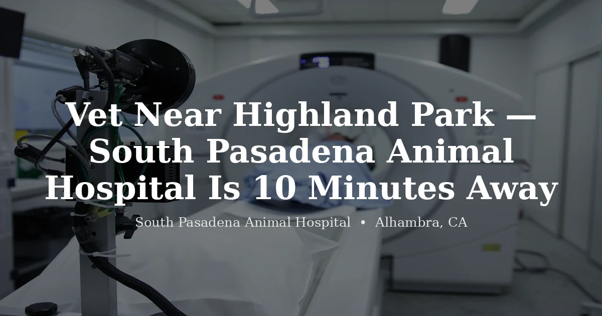

June 17, 2026 · 5 min read
Vet Near Highland Park — South Pasadena Animal Hospital Is 10 Minutes Away

Finding a vet in northeast LA can be genuinely frustrating. Highland Park has grown a lot over the last decade, but the veterinary infrastructure hasn't kept pace — a lot of clinics nearby are at capacity or are dogs-and-cats-only, leaving Highland Park pet owners to travel further than they'd expect just to get a new-client appointment.
South Pasadena Animal Hospital in Alhambra is now accepting new clients — dogs, cats, and exotic animals — and from Highland Park, we're about 10 minutes away.
Getting Here from Highland Park
The drive is short and mostly freeway:
- Head south on CA-110 (Pasadena Freeway) from Highland Park
- Merge onto I-10 East
- Exit at Fremont Avenue in Alhambra
- Head south on Fremont, then turn right on W Main Street
- We're at 3116 W Main St, Alhambra, CA 91801
About 10 minutes in normal traffic — less than most people expect. It's a quick freeway hop, not a cross-town errand.
What We Offer Highland Park Pet Owners
We're a full-service veterinary practice at our Alhambra location, seeing dogs, cats, and a wide range of exotic species. For dogs and cats, our services include:
- Wellness exams and preventive care
- Vaccinations
- Spay and neuter surgery
- Dental cleanings under anesthesia
- Diagnostics — bloodwork, urinalysis, radiographs
- Sick visits and treatment for illness and injury
- Senior pet care
We're appointment-only — no walk-ins. That means you'll be seen on time without a long wait, which makes a real difference when your pet is anxious or unwell.
Exotic Animals Near Highland Park
This is where we really stand out compared to most practices in northeast LA. Exotic animal care — rabbits, guinea pigs, birds, reptiles, ferrets, chinchillas — requires a different skill set than routine dog and cat medicine, and most general practices in the Highland Park area simply don't see these animals regularly.
At South Pasadena Animal Hospital, exotic animals are a genuine part of our practice, not an occasional accommodation. We also have a dedicated cat care page for Highland Park cat owners who've been looking for a feline-comfortable practice nearby.
Things we commonly see from the Highland Park/Eagle Rock area:
- Rabbit wellness, GI stasis, dental problems, and spays
- Guinea pig respiratory infections and dental disease
- Bird wellness, feather issues, and illness workups
- Bearded dragon and gecko care
- Ferret adrenal and insulinoma management
A Note on New Client Availability
This is probably the thing that matters most to most people searching for a vet right now. A lot of practices in and around Highland Park — both in northeast LA and in nearby Pasadena — have been at capacity for new clients since COVID, and some have kept those waitlists even as things have stabilized.
We're actively taking new clients. That's not a promotional line — it's just the current reality. If you've been turned away from other local clinics or been placed on a waitlist, we have availability and we'd be glad to see your pet.
What to Expect at Your First Visit
Your first visit is a new client exam — a thorough look at your pet, a review of their history (bring records if you have them, or we'll start fresh), and a conversation about their ongoing care.
A few things to know:
- Dogs: Leash in the parking lot and waiting area
- Cats: A carrier makes the visit significantly less stressful for them
- Exotic animals: Use a secure carrier; skip the cardboard box
- Records: Bring vaccination history if you have it
- Medications: List of any current meds, supplements, or special diets
You can book online or call us — whichever is easier. We're here, we're taking new clients, and we're 10 minutes away.
See our Highland Park vet page for more, or visit our services page for the full list of what we treat.
Frequently Asked Questions
Is South Pasadena Animal Hospital accepting new clients from Highland Park?
Yes — we're actively accepting new clients from Highland Park and the surrounding northeast LA neighborhoods, including dogs, cats, and exotic animals. Call (626) 441-1314 or book online to get scheduled.
How do I get to South Pasadena Animal Hospital from Highland Park?
From Highland Park, take the CA-110 South (Pasadena Freeway) and merge onto I-10 East. Exit at Fremont Avenue in Alhambra, head south, then turn right on W Main Street. We're at 3116 W Main St, Alhambra, CA 91801 — about 10 minutes in normal traffic.
Do you see exotic pets from Highland Park?
Yes. We see rabbits, guinea pigs, birds, chinchillas, ferrets, reptiles, and other exotics from northeast LA regularly. Exotic-capable veterinary care is limited in the Highland Park area, so many pet owners come to us for exactly this.
What services do you offer for dogs and cats?
Wellness exams, vaccinations, spay and neuter, dental cleanings, diagnostics (bloodwork and radiographs), and treatment for illness and injury. Visit our services page for the full list.
Is there parking at your Alhambra location?
Yes, parking is available at 3116 W Main St. Call us at (626) 441-1314 if you have any questions about finding us.